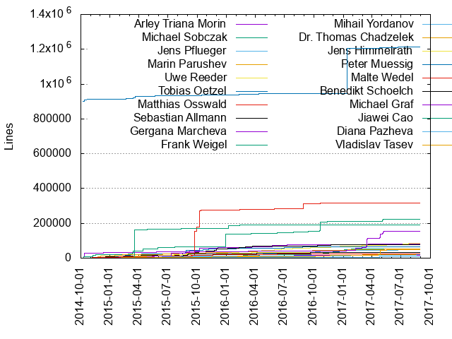
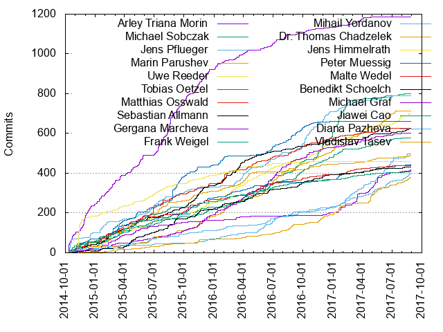

Authors
| Author | Commits (%) | + lines | - lines | First commit | Last commit | Age | Active days | # by commits |
|---|
| Arley Triana Morin | 1187 (3.89%) | 79838 | 71461 | 2014-10-10 | 2017-07-28 | 1022 days, 17:05:01 | 406 | 1 |
| Michael Sobczak | 801 (2.63%) | 54764 | 38225 | 2014-10-10 | 2017-08-11 | 1036 days, 0:00:33 | 300 | 2 |
| Jens Pflueger | 791 (2.59%) | 46828 | 22044 | 2014-10-10 | 2017-07-05 | 999 days, 3:53:00 | 315 | 3 |
| Marin Parushev | 714 (2.34%) | 21236 | 9698 | 2014-10-10 | 2017-07-12 | 1006 days, 3:10:15 | 342 | 4 |
| Uwe Reeder | 699 (2.29%) | 84538 | 64662 | 2014-10-20 | 2017-08-24 | 1039 days, 0:27:45 | 379 | 5 |
| Tobias Oetzel | 662 (2.17%) | 66827 | 39611 | 2014-10-13 | 2016-12-23 | 802 days, 1:40:05 | 251 | 6 |
| Matthias Osswald | 627 (2.06%) | 26304 | 12486 | 2014-10-10 | 2017-07-13 | 1007 days, 8:31:23 | 281 | 7 |
| Sebastian Allmann | 625 (2.05%) | 77277 | 37040 | 2014-10-14 | 2017-08-29 | 1050 days, 1:55:59 | 306 | 8 |
| Gergana Marcheva | 603 (1.98%) | 15567 | 8009 | 2014-11-10 | 2017-08-08 | 1002 days, 0:01:20 | 330 | 9 |
| Frank Weigel | 579 (1.90%) | 225154 | 186137 | 2014-10-09 | 2017-08-19 | 1044 days, 10:01:22 | 332 | 10 |
| Mihail Yordanov | 497 (1.63%) | 7528 | 1803 | 2014-10-16 | 2017-08-18 | 1037 days, 4:17:35 | 226 | 11 |
| Dr. Thomas Chadzelek | 489 (1.60%) | 51738 | 51482 | 2014-10-29 | 2017-08-25 | 1031 days, 0:08:36 | 250 | 12 |
| Jens Himmelrath | 460 (1.51%) | 33205 | 11317 | 2014-10-10 | 2017-05-29 | 961 days, 22:29:31 | 216 | 13 |
| Peter Muessig | 444 (1.46%) | 1211520 | 34390 | 2014-10-08 | 2017-08-29 | 1055 days, 15:21:17 | 270 | 14 |
| Malte Wedel | 439 (1.44%) | 317357 | 82566 | 2014-10-15 | 2017-08-17 | 1037 days, 6:11:37 | 236 | 15 |
| Benedikt Schoelch | 431 (1.41%) | 33100 | 17003 | 2014-10-13 | 2017-08-08 | 1030 days, 4:27:22 | 239 | 16 |
| Michael Graf | 418 (1.37%) | 156040 | 107081 | 2014-10-24 | 2017-08-28 | 1038 days, 19:17:24 | 195 | 17 |
| Jiawei Cao | 409 (1.34%) | 191599 | 271870 | 2014-10-13 | 2017-08-29 | 1051 days, 1:35:44 | 251 | 18 |
| Diana Pazheva | 397 (1.30%) | 18631 | 6686 | 2014-10-10 | 2017-08-24 | 1048 days, 21:03:56 | 228 | 19 |
| Vladislav Tasev | 378 (1.24%) | 47976 | 13169 | 2014-11-12 | 2017-08-25 | 1017 days, 0:15:10 | 186 | 20 |
These didn't make it to the top: Sebastian Ried, Teodor Taushanov, Daniel Nanovski, Siarhei Ulasenka, Martin R. Hristov, Oliver Rooke, I312031, Nikolay Aleksandrenko, Dimo Petrov, Jan Mummenthaler, Thorsten Hochreuter, Adrian Bobev, Alexander Deutschmann, Nikolay Vankov, Christopher Zuendorf, Sven Bernhard, Ilhan Myumyun, Alexander Ivanov, Andreas Kunz, Cahit Guerguec, Eugen Resch, Nikolay Kolarov, Vladislav Iliev, Mingxin Fu, Petr Stribrny, Deyan Yanakiev, Wenqian.Wang, Knut Thies, Mikhail Benderskiy, Peter Harbusch, sapui5, Jordan Dichev, Yavor Ivanov, D058983, Ilhan, Ruben Tuider, i331228, Shtiliyan Uzunov, Krasimir Chariyski, i304310, Thomas Koetter, Patric Ksinsik, Johannes Weber, i302280, Dominic Holzwarth, Lidiya Georgieva, Todor Nikolov, Nikolay Stoichkov, Radostina Tsiklovska, Hristo Petrov, Teodor Todorov, Nikolay Cholakov, Stefan Scherer, Elena Stoyanova, Martin Wittmann, Gergana Kremenska, Petyo Kostakov, Peter Buchholz, Svetoslav Spasov, Sebastian Wennemers, Diana Shtilianova, Wenqian Wang, Evgeni Katsarski, Kevin Edinger, I306504, Gal Roter, Bozhko Todorov, Georgi Hristanov, i024165, Thomas Chadzelek, Ayham Tanbari, Martin Daskalov, I312974, i310817, I032160, Ivan Kazandzhiev, Christian Voshage, Vesselin Petrunov, Claus Neuwirth, Rainer Liebisch, Bohdan Pukalskyi, Thilo Seidel, Petrov, Joaquin Recio Huertas, Tatiana Medvedeva, Jiawei, Pavel Kornev, Jay Barbhaiya, Georgi Valkanov, Axel Warner, Tuan Dat Ngo, Marcos Gavilan de Paz, Diana Mihaylova, Irina Goetzenberger, Alexander Schmalzhaf, Lisa Klein, Pia Kinkel, Nabi Zamani, Jonathan Benn, Lidiya Bobeva, D060268, Stefan Minchev, Arthur Trauter, Tino Butz, Merlin Beutlberger, Martin Schaus, Vitor Seifert, Sylvia Strack, Benjamin Spieler, Tommy Vinh Lam, Borislav Yovchev, Vitor Eduardo Seifert Bazzo, Martin Hristov, Clemens Maier, Valentina Tsonina, Maxim Naidenov, i045852, Thomas Marz, Thomas Houghton-Larsen, Marco Vieth, I311304, Diana Shtilyanova, Silke Spang, Elena Makarenko, Tanya Kostadinova, Tereza Chobanova, I309691, D062797, Manuela Zareva, Aditya Bhatia, Janina Bläsius, Gerald Krause, Dimo Uzunov, Cahit Gürgüc, Brijesh Lochan, Annette Frei, Peter Trebing, Kostakov, Ivaylo Ivanov, Silke Arians, ilhan, Hynek Vilimek, Denise Nepraunig, Daniel Chang, stefan hipfel, Tsvetelina Aleksandrova, I337618, Christoph Kraemer, Alexander Mathias Riess, Alexander Riess, Pavan, Monika Juhasz, Hena Teinzer, Christiane Kurz, i032160, Yordanka Petkova, Srujani Rondla, Amiram Wingarten, d022323, Gernot Kuhr, Svetozar Buzdumovic, Franz Müller, Houghton-Larsen, Franz Mueller, Butz, Tino, Annika Rossel, Tobias Sorn, Sven Bender, Marius Augenstein, Marcus Hoepfner, Sagi Lefler, Markus Wilmer, Hristo Manchev, Stefan Hipfel, Petar Skelin, Frank Otto, Bender, Matthias Schmalz, Arnd vom Hofe, Alex Avizov, Wedel, Malte, Sebastian Bender, Ruben Agullo Cordoba, Razvan Harsan, Ivelina Hristova, I314023, I057508, Helmut Mueller, GErgana Kremenska, D064730, D036800, Christoph Laux, Klaus Schneider, D046328, Todor Atanasov, Thomas Gauguin Houghton - Larsen, Simon Sternberger, Pavan Nayak, Mathias Rimmler, Stefan Haffner, Krasimira Mashova, Jan Pilzer, I043819, Heiko Ettelbrueck, D051856, i057508, Yanaki Yanakiev, Uzunov, Frederic Berg, Elina Visoki, Daniel Peters, David Freidlin, Clara Chamoy, i314465, d060105, Steffen Schneider, Shimon Tal, Lilyana Andreeva, Janina Blaesius, Ivaylo Goranovski, Heiko Ettelbrück, Eduard Klimenko, Dominik Bogar, Claudia Schmidt, Cherkes Alla, Artur Hartwig, Andreas Frische, Shweta Sugnani, SAP GitHub, Myumyun, Martins Kozlovskis, Lars Erbe, Elitsa Milanova, Arnaud Buchholz, Aleksandr Suvorov, Yavor Nikolov, Stefan Engelhardt, Smitha C Patil, Skabandari, Max Schmitt, Martin Wegmann, Mark Schmale, Manuel Wandres, Jan Matthias Pilzer, Ilia Kushnir, Fabian Fellhauer, Dennis Ahaus, Christian Theilemann, Christian Schuff, Christian Scholl, Bogdan Alexander, Anila Elizabeth Chandy, wizzhi, wefferch, unknown, tporcham, sebbi08, prabhatpathania, pgutheil, i057322, d062507, Vinothkumar Vaithianathan, Vaithianathan, Vinothkumar, Vaclav Vopenka, Tristan Storch, Tina Rauschenbach, Timo Staudinger, Thomas Biesemann, Teodora Angelova, Stoyanova, Sebastian Schipplick, Schoelch, Savio Dimatteo, Ryan Murphy, Richard Lindner, Ralph Marshall, Nils Schnabel, Niels Hebling, Mike Maloon, Michele Mancioppi, Michael GALLOS, Markus Konrad, Manuel Blechschmidt, Lukasz Gornicki, JOJO Feng, Itay Assraf, Ido Basch, Frank Tributh, Fahad Abdulkarim Alshunaiber, Ethan Jewett, Eric Isakson, Dominik Garrecht, Dan Dascalescu, D068664, D067785, D038767, D034262, Branimir Lyubenov, Amritha Dilip, Alexander Ti, Alexander Rauh, Akshay Ukey, Aditya Sreekanteswar
Only top 20 authors shown
Only top 20 authors shown
| Month | Author | Commits (%) | Next top 5 | Number of authors |
|---|
| 2017-08 | Alexander Deutschmann | 35 (4.20% of 834) | Diana Pazheva, Vladislav Iliev, i331228, Kevin Edinger, Radostina Tsiklovska | 109 |
| 2017-07 | Uwe Reeder | 35 (4.56% of 767) | Todor Nikolov, Alexander Deutschmann, Svetoslav Spasov, Kevin Edinger, Yordanka Petkova | 120 |
| 2017-06 | Mihail Yordanov | 61 (6.98% of 874) | Marin Parushev, Alexander Deutschmann, Bozhko Todorov, Diana Pazheva, Georgi Hristanov | 116 |
| 2017-05 | Michael Graf | 56 (5.53% of 1013) | Vladislav Tasev, Mihail Yordanov, i331228, Diana Pazheva, Alexander Deutschmann | 123 |
| 2017-04 | Vladislav Tasev | 39 (4.45% of 877) | Michael Graf, i331228, Mihail Yordanov, Alexander Deutschmann, Vladislav Iliev | 128 |
| 2017-03 | Michael Graf | 54 (5.34% of 1011) | Oliver Rooke, Marin Parushev, Mihail Yordanov, Nikolay Vankov, i331228 | 131 |
| 2017-02 | Michael Sobczak | 56 (6.67% of 840) | Mihail Yordanov, Marin Parushev, i331228, Diana Pazheva, Diana Shtilianova | 114 |
| 2017-01 | Michael Sobczak | 103 (11.27% of 914) | Vladislav Tasev, Frank Weigel, Michael Graf, i045852, Peter Muessig | 115 |
| 2016-12 | Michael Sobczak | 68 (7.17% of 949) | Jens Pflueger, Teodor Taushanov, i304310, Marin Parushev, Mingxin Fu | 109 |
| 2016-11 | Michael Sobczak | 67 (7.14% of 938) | Jens Pflueger, Uwe Reeder, Nikolay Vankov, Dimo Petrov, Marin Parushev | 109 |
| 2016-10 | Jens Pflueger | 74 (7.29% of 1015) | i302280, Dimo Petrov, i304310, Gergana Marcheva, Thomas Koetter | 114 |
| 2016-09 | Michael Sobczak | 47 (4.94% of 952) | Frank Weigel, Jens Pflueger, Tobias Oetzel, Martin R. Hristov, Matthias Osswald | 109 |
| 2016-08 | Tobias Oetzel | 40 (4.66% of 859) | Gergana Marcheva, Alexander Ivanov, Vladislav Tasev, Michael Sobczak, Marin Parushev | 100 |
| 2016-07 | Gergana Marcheva | 53 (7.39% of 717) | Marin Parushev, Jens Pflueger, Martin R. Hristov, Arley Triana Morin, i302280 | 92 |
| 2016-06 | Marin Parushev | 60 (4.91% of 1223) | Michael Sobczak, Gergana Marcheva, i024165, Tobias Oetzel, Mihail Yordanov | 99 |
| 2016-05 | Malte Wedel | 34 (4.91% of 693) | i304310, Sebastian Ried, Mihail Yordanov, Daniel Nanovski, Uwe Reeder | 95 |
| 2016-04 | Dr. Thomas Chadzelek | 44 (5.06% of 870) | Sebastian Ried, Gergana Marcheva, Jens Pflueger, Michael Sobczak, Uwe Reeder | 97 |
| 2016-03 | Jens Pflueger | 57 (6.58% of 866) | Sebastian Allmann, Gergana Marcheva, Uwe Reeder, Michael Sobczak, Dr. Thomas Chadzelek | 86 |
| 2016-02 | Matthias Osswald | 53 (6.46% of 820) | Marin Parushev, Sebastian Allmann, Uwe Reeder, Peter Muessig, Gergana Marcheva | 87 |
| 2016-01 | Arley Triana Morin | 36 (5.12% of 703) | Tobias Oetzel, I312031, Uwe Reeder, Sebastian Allmann, Gergana Marcheva | 86 |
| 2015-12 | Arley Triana Morin | 45 (5.94% of 757) | Gergana Marcheva, Frank Weigel, Dimo Petrov, Uwe Reeder, Marin Parushev | 91 |
| 2015-11 | Arley Triana Morin | 73 (7.09% of 1029) | Sebastian Allmann, I312031, Gergana Marcheva, Nikolay Aleksandrenko, Adrian Bobev | 84 |
| 2015-10 | Arley Triana Morin | 45 (5.72% of 787) | Sebastian Allmann, Malte Wedel, Peter Muessig, Dr. Thomas Chadzelek, Tobias Oetzel | 89 |
| 2015-09 | Tobias Oetzel | 64 (7.27% of 880) | Arley Triana Morin, Adrian Bobev, Nikolay Aleksandrenko, Thorsten Hochreuter, Michael Sobczak | 88 |
| 2015-08 | Arley Triana Morin | 120 (13.23% of 907) | Tobias Oetzel, Sebastian Ried, Nikolay Aleksandrenko, Thorsten Hochreuter, Benedikt Schoelch | 85 |
| 2015-07 | Arley Triana Morin | 88 (9.66% of 911) | Dr. Thomas Chadzelek, Jens Pflueger, Matthias Osswald, Krasimir Chariyski, Nikolay Aleksandrenko | 86 |
| 2015-06 | Matthias Osswald | 49 (5.56% of 882) | Jens Pflueger, Jens Himmelrath, Deyan Yanakiev, Marin Parushev, Dr. Thomas Chadzelek | 91 |
| 2015-05 | Arley Triana Morin | 57 (7.79% of 732) | Malte Wedel, Tobias Oetzel, Matthias Osswald, Jiawei Cao, Thorsten Hochreuter | 84 |
| 2015-04 | Arley Triana Morin | 43 (5.95% of 723) | Cahit Guerguec, Nikolay Aleksandrenko, Benedikt Schoelch, Dr. Thomas Chadzelek, Sebastian Allmann | 79 |
| 2015-03 | Cahit Guerguec | 46 (4.99% of 921) | Arley Triana Morin, Tobias Oetzel, Peter Muessig, Matthias Osswald, Martin Wittmann | 85 |
| 2015-02 | Tobias Oetzel | 55 (5.62% of 979) | Arley Triana Morin, Dr. Thomas Chadzelek, Sebastian Allmann, Nikolay Aleksandrenko, Matthias Osswald | 97 |
| 2015-01 | Arley Triana Morin | 52 (7.43% of 700) | Jens Pflueger, Tobias Oetzel, Malte Wedel, Uwe Reeder, Siarhei Ulasenka | 88 |
| 2014-12 | Arley Triana Morin | 76 (12.42% of 612) | Jens Pflueger, Uwe Reeder, Malte Wedel, Peter Harbusch, Matthias Osswald | 72 |
| 2014-11 | Jens Himmelrath | 154 (15.20% of 1013) | Arley Triana Morin, Jan Mummenthaler, Peter Muessig, Matthias Osswald, Cahit Guerguec | 82 |
| 2014-10 | Arley Triana Morin | 94 (10.12% of 929) | Jens Pflueger, Michael Sobczak, Eugen Resch, Adrian Bobev, Cahit Guerguec | 81 |
| Year | Author | Commits (%) | Next top 5 | Number of authors |
|---|
| 2017 | Mihail Yordanov | 263 (3.69% of 7130) | Michael Graf, Marin Parushev, Michael Sobczak, i331228, Vladislav Tasev | 181 |
| 2016 | Jens Pflueger | 378 (3.56% of 10605) | Michael Sobczak, Gergana Marcheva, Marin Parushev, Uwe Reeder, Frank Weigel | 200 |
| 2015 | Arley Triana Morin | 682 (6.68% of 10208) | Tobias Oetzel, Sebastian Allmann, Nikolay Aleksandrenko, Matthias Osswald, Dr. Thomas Chadzelek | 181 |
| 2014 | Arley Triana Morin | 243 (9.51% of 2554) | Jens Himmelrath, Jens Pflueger, Peter Muessig, Cahit Guerguec, Jan Mummenthaler | 107 |
| Domains | Total (%) |
|---|
| sap.com | 30452 (99.85%) |
|---|
| gmail.com | 14 (0.05%) |
|---|
| gmx.de | 8 (0.03%) |
|---|
| users.noreply.github.com | 4 (0.01%) |
|---|
| yahoo.com | 2 (0.01%) |
|---|
| uniorg.de | 2 (0.01%) |
|---|
| sas.com | 2 (0.01%) |
|---|
| googlemail.com | 2 (0.01%) |
|---|
| global.corp.sap | 2 (0.01%) |
|---|
| wp.pl | 1 (0.00%) |
|---|